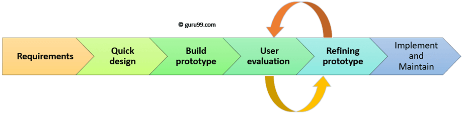

Prototyping ehk prototüüpimine
Prototüüpimine on süsteemi algse versiooni loomise protsess, mille eesmärk on
katsetada disainilahenduste võimalusi ja demonstreerida ideid.
Prototüüpide loomisel on oluline kiire arendamine, mis saavutatakse
spetsiaalsete tööriistade ja kiire prototüüpimise keelte abil. Prototüüp ei pea
olema täielikult funktsionaalne, vaid keskenduma neile süsteemi elementidele,
millest ei ole veel selget arusaama. Samuti ei ole vaja, et prototüüp sisaldaks
vigade kontrolli või lahendaks näiteks turvalisusega seotud küsimusi.
-
Etapp - Nõuete kogumine:
Selles etapis kogutakse kliendi vajadused üldisel tasemel.
Fikseeritakse esmased nõuded ja määratletakse valdkonnad, mis vajavad edaspidi täpsustamist.
-
Etapp - Kiire kavandamine:
Keskendutakse süsteemi nähtavale osale, näiteks sisend- ja väljundprotsessidele ning
kasutajaliidese vormidele.
Selle tulemuseks on algne prototüüp, mis pakub visuaalse ja
funktsionaalse ülevaate planeeritavast süsteemist.
Klient hindab prototüüpi ning esitab selle põhjal oma tagasisidet ja täpsustusi.
-
Etapp - Iteratsioon ja prototüübi täiustamine:
Saadud tagasiside alusel tehakse parandusi ja täiendusi prototüübis.
Protsessi korratakse iteratiivselt, kuni prototüüp rahuldab kliendi ootusi ja vajadusi.
Samal ajal kogub arendaja uusi teadmisi kliendi soovide ja nõuete kohta,
mida kasutatakse edasistes arendusfaasides.
Prototüüpimine on oluline protsess, mis hõlmab kolme etappi:
nõuete kogumist, kiiret kavandamist ja iteratiivset täiustamist.
Kõik need etapid on suunatud sellele, et luua süsteemi algne versioon,
mis vastab kasutaja ootustele ning võimaldab kliendi ja arendaja
koostöös jõuda parima lahenduseni. Iteratiivne lähenemine tagab,
et prototüüpi saab pidevalt parendada ja klient saab oma vajadusi
ja soove selle kaudu täpsustada, mistõttu lõpp-tulemus on nii
funktsionaalne kui ka kasutajakeskne.

Prototüüpimise põhimõtted:
-
Põhimõte - Ühekordne prototüüpimine:
Ühekordse prototüüpimise eesmärk on luua kiire ja ajutine lahendus,
mis aitab arenduse käigus testida ideid, selgitada arendatava süsteemi nõudeid
ja demonstreerida funktsionaalsust.
Prototüüp hävitatakse pärast kasutamist (selle alusel ei ehitata lõplikku süsteemi).
See ei vasta mittefunktsionaalsetele nõuetele (nt turvalisus, jõudlus).
Prototüübi struktuur ei ole sobiv edasiseks arenduseks,
kuna see ei täida kvaliteedistandardeid.
-
Põhimõte - Evolutsiooniline prototüüpimine:
Evolutsioonilise prototüüpimise puhul arendatakse prototüüpi järkjärgult
ja seda täiustatakse iteratsioonide käigus kuni lõpliku süsteemini välja.
Prototüübist saab osa lõplikust süsteemist.
Sobib projektidele, kus nõuded ei ole alguses täielikult selged ja
protsessis saab neid täpsustada.
Iga uus iteratsioon parandab funktsionaalsust ja süsteemi kvaliteeti.
-
Põhimõte - Lisanduv prototüüpimine:
Lisanduv prototüüpimine keskendub süsteemi üksikute osade loomisele eraldi,
integreerides need hiljem terviklahenduseks.
Süsteem arendatakse osade kaupa; iga osa on eraldi prototüüp.
Lõpptulemusena ühendatakse kõik loodud osad ühtseks ja toimivaks süsteemiks.
Võimaldab projekti varasemates faasides valmis saada osalisi lahendusi (nt töötav kasutajaliides).
Prototüüpimise põhimõtte valik sõltub projekti eesmärkidest ja nõuetest:
-
Ühekordne prototüüpimine sobib ideede ja nõuete testimiseks.
-
Evolutsiooniline prototüüpimine on kasulik, kui lõplik
süsteem on vaja järkjärgult välja arendada.
-
Lisanduv prototüüpimine töötab hästi keerukate süsteemide korral,
kus erinevad osad arendatakse ja integreeritakse etapiviisiliselt.
Prototüüpimise head ja halvad
| Head |
Halvad |
| Kiire vajaduste selgitamine ja valideerimine |
Ajutise lahenduse oht |
| Kasutajakesksus |
Vigane arusaam lõpptulemusest |
| Visuaalne ja funktsionaalne ülevaade |
Fookuse kadu |
| Iteratiivne täiustamine |
Kallis ja aeganõudev iteratsioon |
| Kommunikatsiooni parandamine |
Ebapraktiliste ootuste seadmine |
| Kulude ja riski vähendamine |
Vähene tähelepanu mittefunktsionaalsetele aspektidele |
allikad:
Perplexity
Guru99